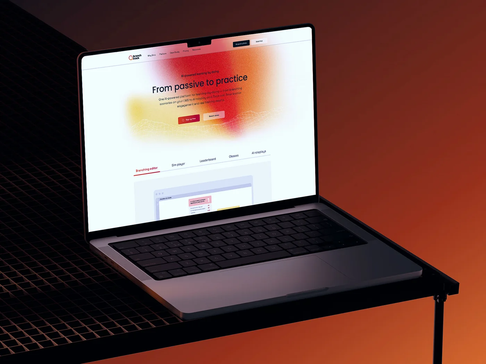
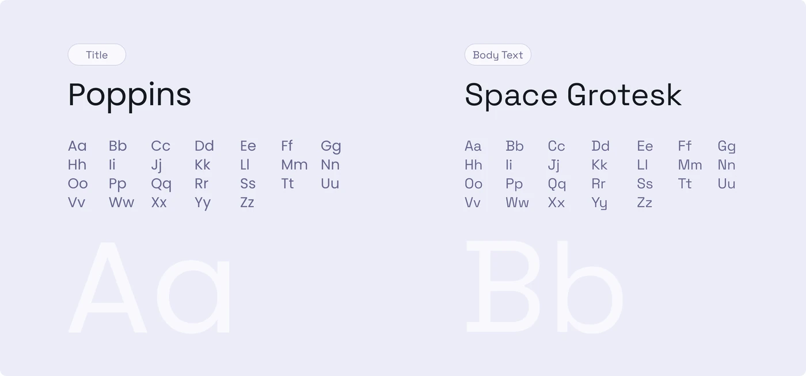
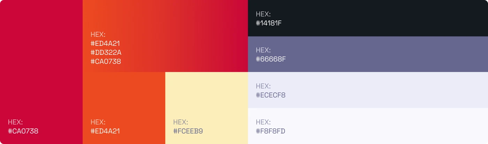
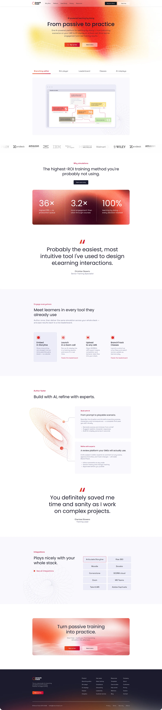
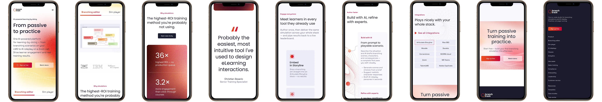
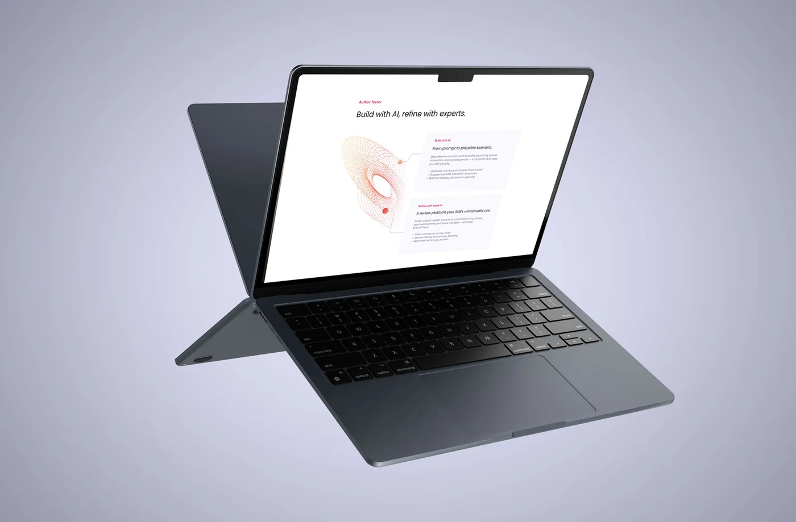
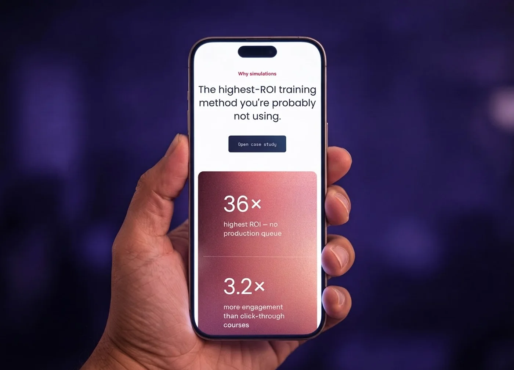

BranchTrack
A new landing page and visual style for a no‑code platform for branching simulations and AI roleplay.
- Landing page
- B2B SaaS
- Desktop
- Mobile
The old site was outdated. The client needed a modern, well‑structured page that fits their product. Their AI‑generated design lacked clean, polished visuals.
I created a new visual style and landing page for desktop and mobile. The brand palette stayed recognisable but was refreshed with a warm gradient that became the page's signature.
It is a clean, minimal page that explains the product at a glance: a gradient hero, product preview, proof, key features and integrations, all leading to one clear action, to sign up or watch a demo.







The result
One page, two screens, one clear action.
The mobile version is designed, not scaled down. Cards stack into a single column, key metrics follow each other vertically and integrations fit a two‑column grid, so the page stays easy to scan on a small screen.